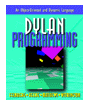

by Neal Feinberg, Sonya E. Keene, Robert O. Mathews, P. Tucker Withington
Published by Addison-Wesley Longman, ISBN 0-201-47976-1

— Andrew Shalit, author of The Dylan Reference Manual.
The authors have all worked on Harlequin's Dylan product. Neal Feinberg manages the development of Harlequin's database technology. Sonya E. Keene, author of Object-Oriented Programming in Common Lisp (Addison Wesley Longman, 1989) is also involved in publishing large documents ont the World Wide Web. Robert O. Mathews was previously the OSF documentation project leader for Motif and DCE. P. Tucker Withington designs and develops automatic memory-management facilities for Dylan.
Dylan Programming is available in print from Harlequin, Addison-Wesley, or your bookseller.
N Feinberg/S E Keene/R Mathews/P Tucker Withington, DYLAN PROGRAMMING, (c) 1997 Harlequin Inc. Reproduced by permission of Addison-Wesley Longman Publishing Company, Inc. All rights reserved. No further copying, downloading or transmitting of this material is allowed without the prior written permission of the publisher.